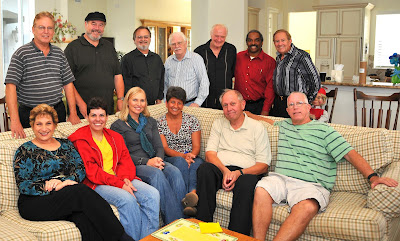

Florida Vent Meeting Report
11/13/2011
By M. A. Denny Denemark
The Central Florida Vents met last Sunday at Tom and Patti Dahl's beautiful home in Celebration Florida. We got to see Donald Woodford's new Gilmer figure, Ed Thomas brought out the figure he won at the conVention, Lee Wolfson showed off a figure he painted himself and Margaret Davis dazzled us with her duck and a good mask routine using Jacki Manna for a subject. Of course Tom Dahl did a few magic tricks and I dragged out Madame Noze-it-All and Ouija. Jim Teter even made a return visit he had so much fun at the last meeting. We even had a cake with an edible vent figure on it for the occasion.
The Central Florida Vents met last Sunday at Tom and Patti Dahl's beautiful home in Celebration Florida. We got to see Donald Woodford's new Gilmer figure, Ed Thomas brought out the figure he won at the conVention, Lee Wolfson showed off a figure he painted himself and Margaret Davis dazzled us with her duck and a good mask routine using Jacki Manna for a subject. Of course Tom Dahl did a few magic tricks and I dragged out Madame Noze-it-All and Ouija. Jim Teter even made a return visit he had so much fun at the last meeting. We even had a cake with an edible vent figure on it for the occasion.
{kind=link}
 |
| Back Row from left to right: Lee Wolfson, Ventriloquist Larry Larkin, Comedian John Parisi, Ventriloquist, Figure Maker Al Stevens, Ventriloquist, Figure Maker and Musician Ed Thomas, Ventriloquist, Actor Donald Woodford, Ventriloquist and Collector Jim Teeter, Ventriloquist Front Row from left to right: Carol Stein, Singer, Pianist Karen Climer, Clown, Twister, Magician, VIT (Ventriloquist in Training) Jacki Manna, no explanation needed Margaret Davis, Ventriloquist Tom Dahl, Magician and VIT M.A. Denny Denemark, ventriloquist, comedy magican |
{kind=link}